Rimel pentru gene: cum să alegi și cum să îl aplici corect
Rimelul pentru gene este unul dintre cele mai populare produse pentru machiajul ochilor. Acesta ajută la evidențierea privirii, accentuează lungimea și volumul genelor și permite realizarea unui machiaj îngrijit, potrivit atât pentru look-ul de zi cu zi, cât și pentru ocazii speciale. Un rimel ales corect poate alungi vizual genele, le poate oferi mai multă densitate și poate evidenția frumos forma ochilor.
Consultații / ProgramareTipuri de rimel
Rimel pentru volum, alungire, curbare și rimel rezistent la apă.
Tipuri de perii
Perii din silicon, clasice sau curbate pentru efecte diferite asupra genelor.
Tehnica de aplicare
Cum să aplici rimelul corect pentru volum și lungime.
Cele mai bune rimeluri
Rimeluri populare de la diferite branduri și caracteristicile lor.
Instrumente pentru gene
Cleşti pentru gene, perii și accesorii pentru machiajul ochilor.
Nuanțe de rimel
Rimel negru, maro sau colorat – cum să alegi nuanța potrivită pentru culoarea ochilor.
Compoziția rimelului
Componentele principale ale rimelului: ceară, pigmenți, polimeri și ingrediente de îngrijire.
Rimel pentru diferite tipuri de gene
Cum să alegi rimelul pentru gene scurte, rare sau drepte.
Rimel rezistent la apă
Când merită să alegi o formulă waterproof și prin ce se diferențiază.
Cum se îndepărtează rimelul
Demachierea corectă a ochilor fără a deteriora genele.
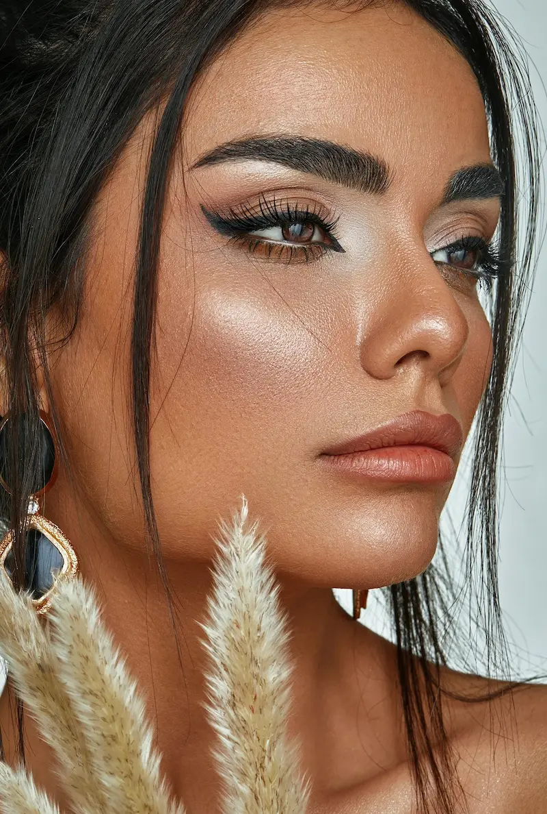
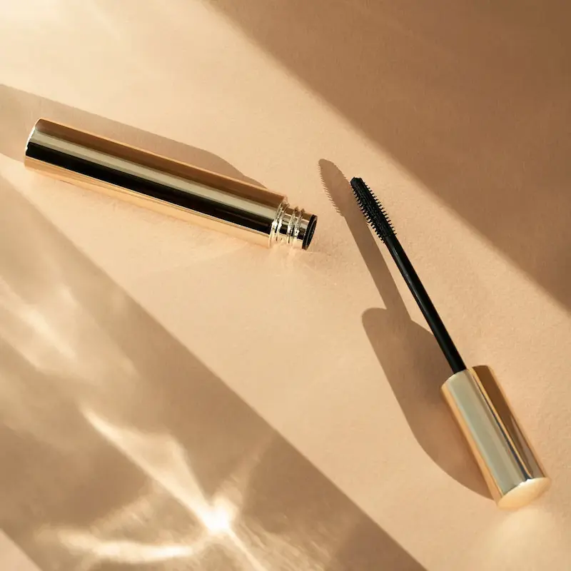
Tipuri de rimel pentru gene
Există mai multe tipuri principale de rimel, fiecare oferind un efect diferit: volum, alungire, curbare sau rezistență la apă. Alegerea depinde de rezultatul dorit și de tipul genelor.
Make-up artiștii combină adesea diferite tipuri de rimel pentru a obține un efect complet: de exemplu, o bază pentru alungire și un rimel pentru volum aplicat deasupra.
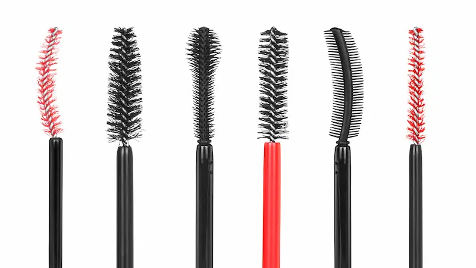
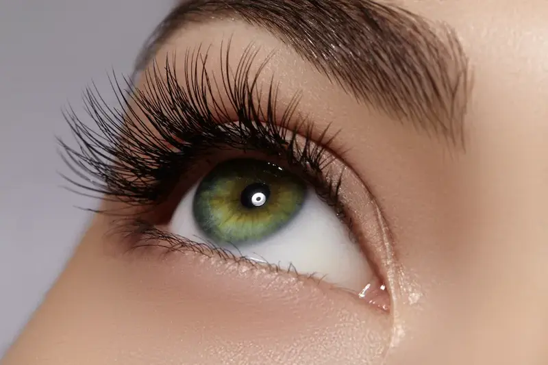
Tipuri de perii pentru rimel
Peria rimelului joacă un rol important în efectul final asupra genelor. Formele diferite permit obținerea volumului, lungimii sau curburii.
Pentru un rezultat optim, make-up artiștii recomandă alegerea periei în funcție de formula rimelului și de tipul genelor.
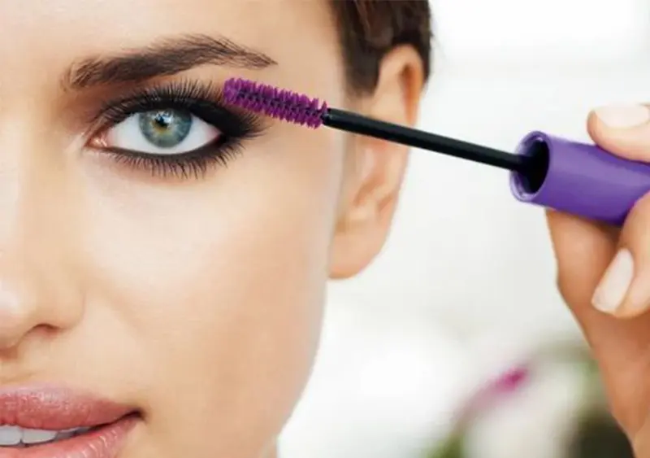
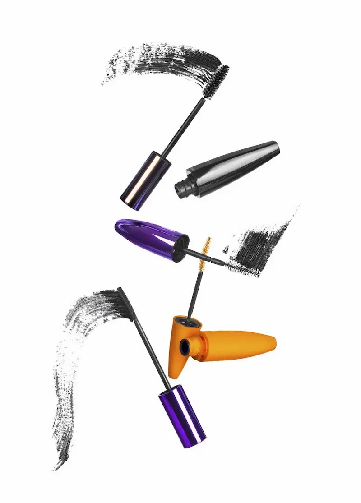
Tehnica aplicării rimelului
Tehnica corectă de aplicare a rimelului ajută la obținerea volumului, lungimii și a unei priviri expresive. Chiar și un rimel de calitate poate arăta slab dacă este aplicat incorect.
Utilizarea tehnicii corecte împreună cu peria potrivită și tipul corect de rimel asigură un machiaj al genelor frumos și de lungă durată.
Aveți nevoie de un machiaj profesional?
Dacă doriți să găsiți nuanța perfectă sau să realizați un machiaj profesional, apelați la un make-up artist cu experiență.
Vezi serviciile make-up artistului
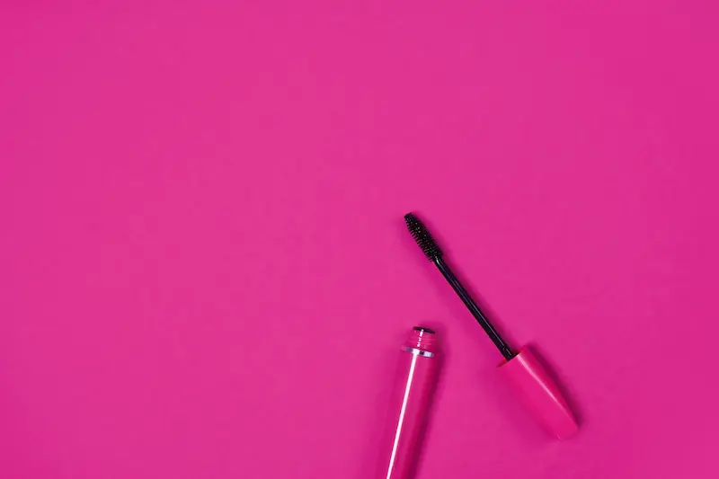
Sfaturi de la make-up artist: secretele unui machiaj perfect al genelor
Urmând aceste sfaturi, machiajul genelor va arăta profesional și va rezista întreaga zi, oferind privirii expresivitate și frumusețe naturală.
Cele mai bune rimeluri pentru gene
O selecție de rimeluri populare pentru volum, lungime, curbare și machiaj profesional. Aici sunt prezentate atât variante accesibile, cât și produse premium, ușor de găsit online și utilizate de make-up artiști.
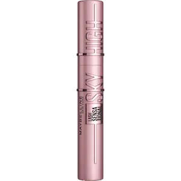
Volum și lungime pentru gene mai dense, variantă accesibilă
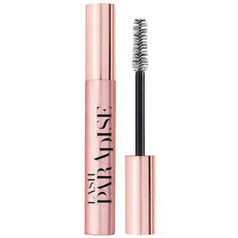
Volum intens și lungime cu textură delicată
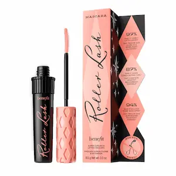
Curbare a genelor și volum natural
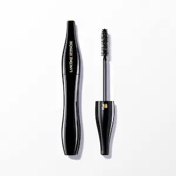
Rimel premium pentru volum și separarea genelor
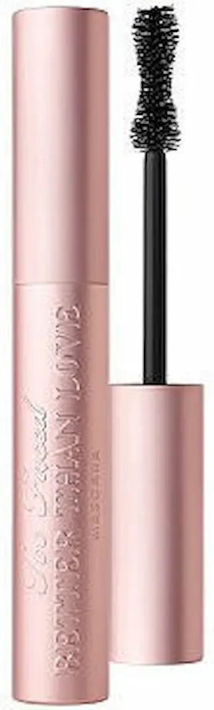
Efect dramatic de volum și gene lungi
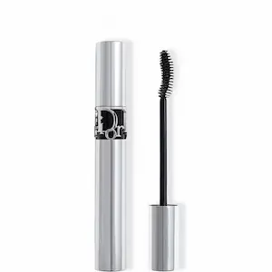
Rimel premium pentru volum și separare

Rimel accesibil cu efect de lungime și curbare
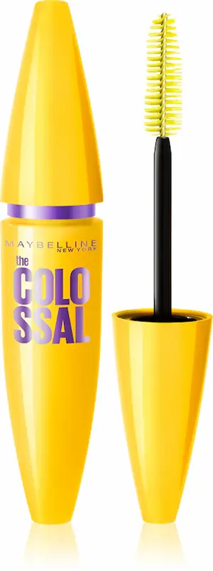
Volum ușor și separarea genelor pentru machiaj zilnic
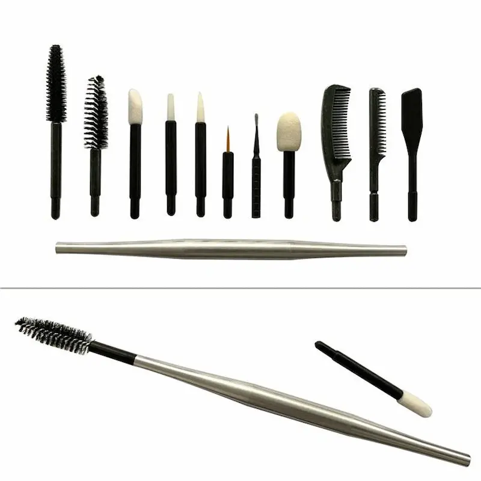
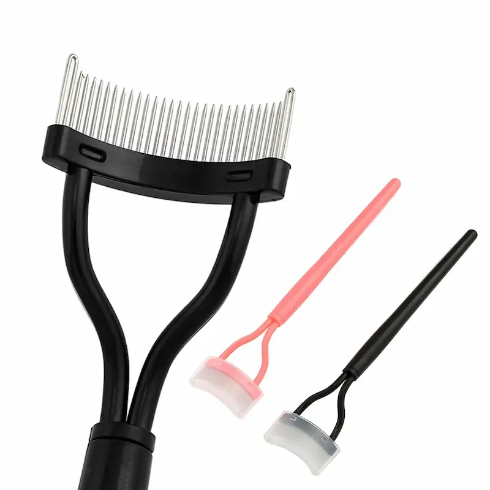
Instrumente pentru un machiaj perfect al genelor
Pentru gene frumoase și expresive nu este important doar rimelul, ci și instrumentele potrivite. Acestea ajută la separarea, curbarea și alungirea genelor, oferind un efect profesional.
Perii pentru rimel
Diferite forme de perii pentru volum, separare și curbare a genelor.
Clește pentru gene
Ajută la obținerea unei curbe frumoase a genelor și face ochii să pară mai mari.
Piepteni pentru gene
Pentru separarea genelor după aplicarea rimelului și îndepărtarea excesului.
Accesorii din silicon
Accesorii moderne care ajută la aplicarea mai precisă și la separarea genelor.
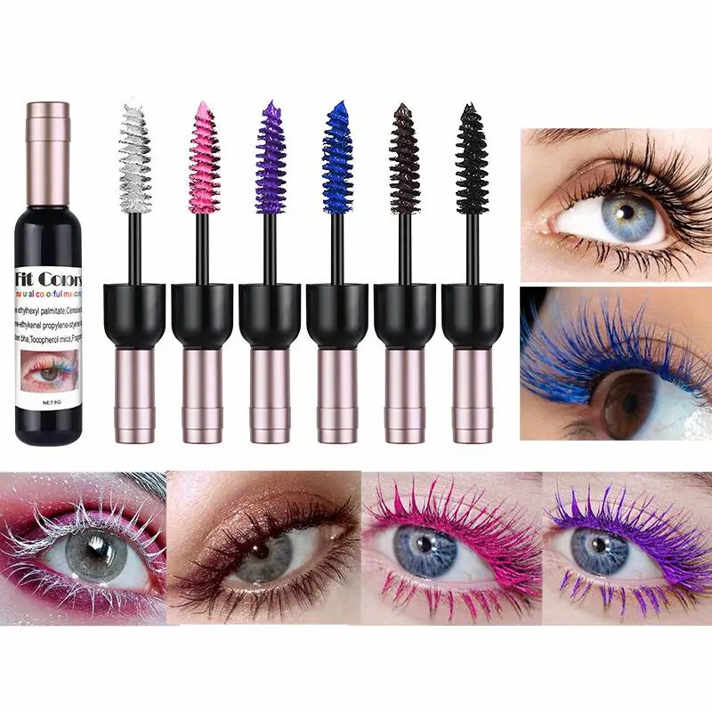
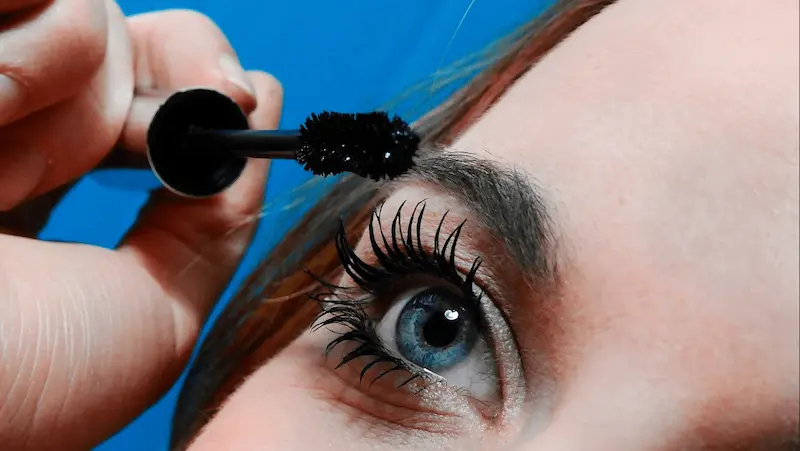
Nuanțe de rimel și cum să o alegi pe cea potrivită
Culoarea rimelului influențează efectul machiajului. Pe lângă clasicul negru, există și variante maro, albastre sau colorate, potrivite pentru diferite ocazii și tipuri de aspect.
Negru
Culoarea clasică pentru toate tipurile de gene, accentuează ochii și creează o privire expresivă.
Maro
Ideal pentru gene deschise la culoare și pentru machiajul natural de zi, oferind un aspect delicat.
Albastru
Evidențiază albul ochilor și face privirea mai luminoasă și mai proaspătă.
Culori creative
Rimeluri violet, verzi sau bordo pentru un machiaj creativ și îndrăzneț.
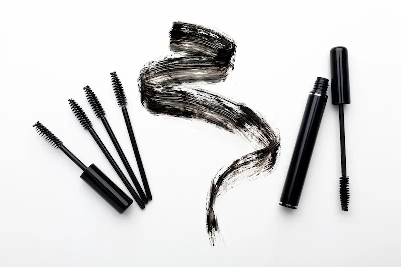
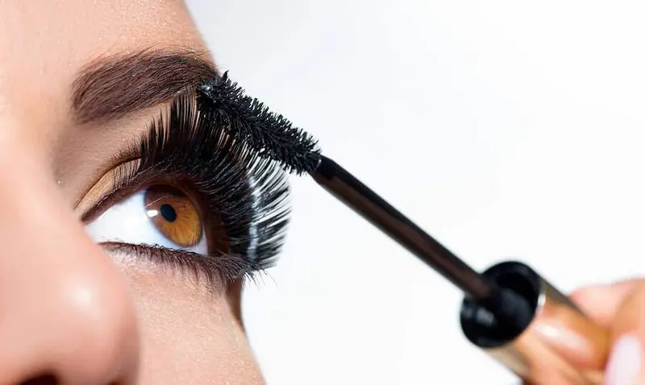
Compoziția rimelului: ce este important să știi
Rimelul conține mai multe componente cheie care definesc proprietățile sale: volum, alungire, rezistență și efect de separare a genelor.
Cunoscând compoziția rimelului, vei putea alege produsul potrivit pentru obiectivele tale: volum, alungire, îngrijire sau rezistență.
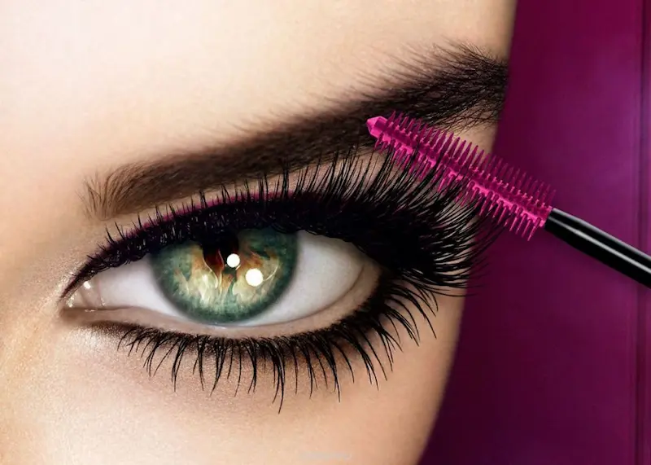
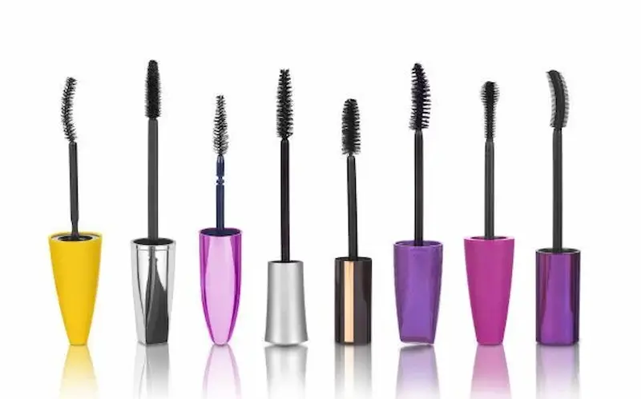
Cum să alegi rimelul potrivit pentru tipul tău de gene
Diferitele tipuri de gene necesită texturi și perii diferite pentru a le evidenția frumusețea naturală și a obține efectul dorit.
Alegerea corectă a rimelului și a instrumentelor potrivite face machiajul ochilor mai expresiv și sigur pentru sănătatea genelor și a ochilor.
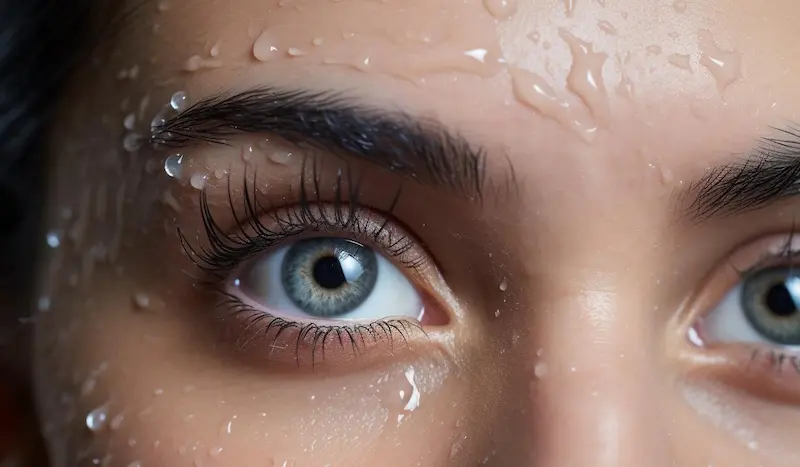
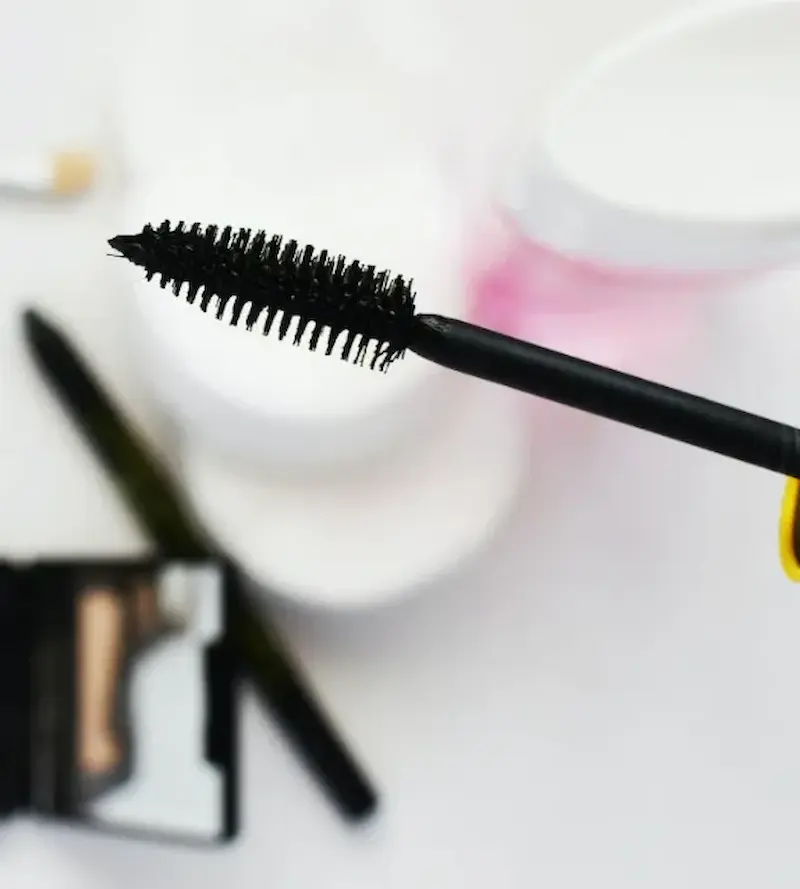
Rimel rezistent la apă: caracteristici și avantaje
Rimelul rezistent la apă menține machiajul ochilor chiar și în condiții de umiditate ridicată, ploaie, lacrimi sau sport. Formula specială previne întinderea și asigură o rezistență mai mare decât rimelul obișnuit.
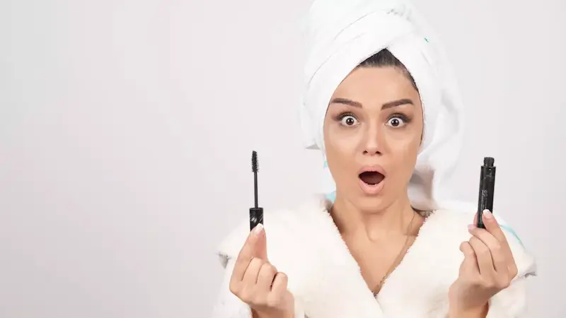
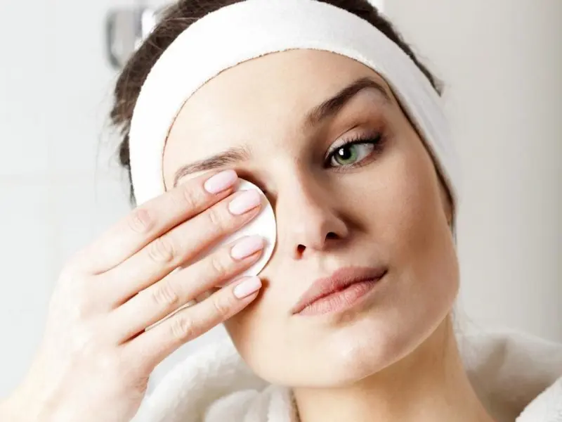
Cum să îndepărtezi rimelul de pe gene
Îndepărtarea corectă a rimelului este importantă pentru sănătatea genelor și a pleoapelor. Metodele greșite pot provoca ruperea genelor, iritații sau murdărirea machiajului.
Urmând aceste recomandări, genele tale vor rămâne sănătoase și frumoase chiar și după utilizarea frecventă a rimelului.
Greșeli frecvente la folosirea rimelului
Urmând aceste recomandări, vei evita greșelile tipice și vei obține un machiaj al genelor curat, expresiv și rezistent.
Întrebări frecvente despre rimel
Cum să aleg nuanța rimelului?
Rimelul negru este universal și potrivit pentru orice machiaj. Nuanțele de maro sau grafit oferă un look de zi mai delicat. Pentru machiaje îndrăznețe, poți alege variante colorate: albastru, violet sau smarald.
Ce rimel este potrivit pentru gene scurte?
Formulele ușoare de alungire cu perie subțire scot în evidență genele scurte și creează efect de lungime fără cocoloașe.
Este necesar să folosesc un ondulator de gene?
Da, ondularea genelor înainte de aplicarea rimelului ajută la obținerea unui look mai deschis și subliniază forma ochilor.
Pot folosi rimel rezistent la apă în fiecare zi?
Da, dar reține că pentru demachierea rimelului rezistent la apă este nevoie de un produs special, pentru a nu deteriora genele.
Cum se aplică rimelul în straturi?
Începe cu un strat ușor de bază, apoi aplică 1–2 straturi suplimentare pentru volum și lungime, evitând cocoloașele și lipirea genelor.